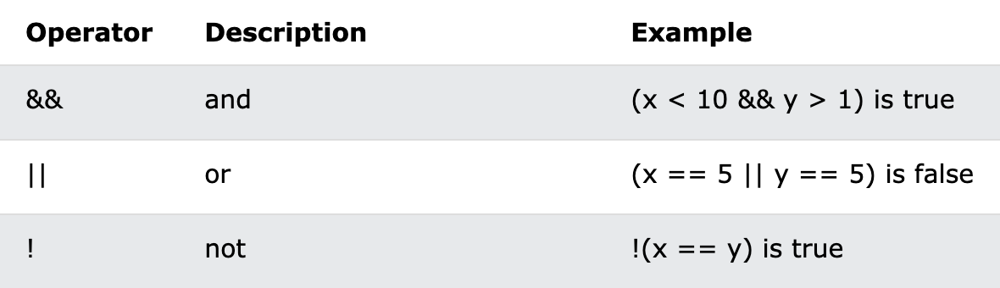

Logical operators are used to test for true or false. They are used to determine the logic between variables or values.
Given that x = 6 and y = 3, the table below
explains the logical operators:

const hasDriversLicense = true;
const hasGoodVision = false;
// And Operator &&
console.log(hasDriversLicense && hasGoodVision);
// Or Operator ||
console.log(hasDriversLicense || hasGoodVision);
// Not Operator - it will invert the value !
console.log(!hasDriversLicense);
Now check if Colin should be driving
if (hasDriversLicense && hasGoodVision) {
console.log("Colin will drive!");
} else {
console.log("No, someone else should drive!");
}
const isTired = false;
console.log(hasDriversLicense && hasGoodVision && isTired);
// Colin is able to drive if he has a driver's license, has good vision
and is NOT tired.
if (hasDriversLicense && hasGoodVision && !isTired) {
console.log("Colin will drive!");
} else {
console.log("No, someone else should drive!");
}